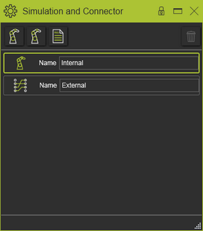
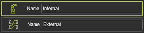
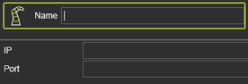

The Simulation connectors command opens a dashboard with an overview of the simulation connectors of the controller. |
 |
The middle section of the dashboard shows the defined instances of available connectors. By default one internal and one external connector instance has been created automatically. These two cannot be modified, nor can be deleted. |
 |
The green frame indicates the active connector that will be used while simulating the project. Picking another one in this list activates that instance. |
In the top row all other available (installed) external connectors are displayed. |
An instance for simulation can be defined by picking the required connector from the top row. The instance is then added to the list and set as active. Its name and attributes have to be entered to complete the definition. |
 |
Manual inserted instances can be removed with the Delete button, that is located at the top right corner of the dashboard. The command is executed on the active instance. |
|